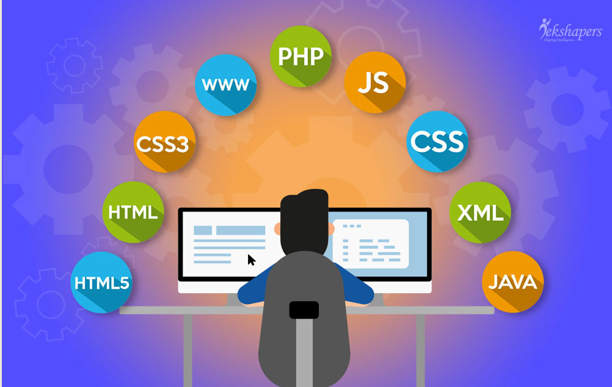

A web developer is a programmer who specializes in, or is specifically engaged in the development of World Wide Web applications using a client–serve model. The applications typically use HTML, CSS and JavaScript in the client, PHP, ASP. NET (C#), Python, Node.js, Go or Java in the server, and http for communications between client and server.
A web developer builds and maintains websites with the client and consumer in mind. That is, the end design must include products and services offered and show how users may access these. For example, a customer may want a form to capture an end user’s e-mail to request additional information, provide a newsletter, or thank a customer for their business.
Nature of employment
Web developers are found working in various types of organizations, including large corporations and governments, small and medium-sized companies, or alone as freelancers. Some web developers work for one organization as a permanent full-time employee, while others may work as independent consultants, or as contractors for an agency.
Type of Work
Modern web applications often contain three or more tiers, and depending on the size of the team a developer works on, he or she may specialize in one or more of these tiers - or may take a more interdisciplinary role. A web developer is usually classified as a Front-end web development or a Back-End Web Developer.
Types of Web Developers
Unfortunately, the question “What does a web developer do?” doesn’t have one simple answer. There are some different types of web developers, each of which focuses on a different aspect of the creation of a website.
Front-end Web Developer
A front-end developer is someone who takes a client or design team’s website design and writes the code needed to implement it on the web. A decent front-end web developer will be fluent in at least three programming languages - HTML, CSS, and JavaScript. HTML allows them to add content to a website while splitting it into headings, paragraphs, and tables. CSS lets a decent developer style the content and change things like colors, sizes, and borders. JavaScript allows the inclusion of interactive elements, such as push buttons. We will go into more detail about these languages later.
- They make sure that all of the content that is needed for the website is clear, visible, and found in the right place. In some cases front-end developers may also have content writing skills, allowing them to create the content for the website as they go.
- They make sure that that the right colors are in the right places, especially concerning text colors, background colors, and headers. Some of the best front-end developers are also very good designers, allowing them to tweak things as they go.
- They make sure that all outbound links are correctly formatted, that all buttons work properly, and that the website is responsive and attractive. Mobile design is usually a big part of the job, while it is also important to make sure that a website will display correctly on all web browsers.
As you can see, the answer to the question “What is a web developer?” certainly isn’t simple. Even front-end developers have it tough, and this is probably the simplest of the three types of development to learn.
Back-end Web Developer
While it may seem like front-end developers have a difficult job making sure that a website looks great, works well, and contains the correct content, back-end developers have it much worse. While front-end developers are responsible for client-side programming, back-end developers have to deal with the server-side. This means that they have to create the code and programs which power the website’s server, databases, and any applications that it contains. The most important thing as a back-end developer is the ability to be able to create a clean, efficient code that does what you want it to in the quickest way possible.
Since website speed is a major consideration when it comes to search engine optimization (SEO), it is a large factor when developing the back-end. To fully explain what is a web developer it is essential to know that back-end developers use a wide range of different server-side languages to build complicated programs.
Some of the most popular languages used include PHP, Python, Java, and Ruby. JavaScript is also becoming increasingly widespread as a back-end development language, while SQL is commonly used to manage and analyze data in website databases.
Full-stack Web Developer
Full-stack developers understand both front and back-end strategies and processes, which means that they are perfectly positioned to oversee the entire process. In the case of small websites that don’t have a huge development budget, a full-stack developer will often be employed to build the entire website. In this case, it is extremely important for them to have a complete, in-depth understanding of both front and back-end development and how they work.
Learning full-stack development techniques has a huge range of benefits, including:
- You will end up with the knowledge to be able to create an entire website on your own. This makes you a lot more employable, increasing your job security in the future.
- As a full-stack developer, you will understand the connections between the front and back-ends of a website, allowing you do build efficient and effective programs for all parts of the website.
Full-stack developers are often employed to oversee large projects for big web development companies. Positions like this are likely to be paid more than standard web development positions, making them more attractive to developers. Full-stack defines what is a web developer.
How to be a web developer
While a lot of people do their research, decide on programming languages to learn, and have a good go at learning web development, the majority of them fail due to a distinct lack of direction.
If you are serious about building a career for yourself as an experienced web developer, then you need to make sure that you start with a clear vision of how you are going to achieve this. The following steps should help guide you:
- Start by deciding what sort of developer you want to become. The languages and techniques that you learn will depend on whether you want to focus on front or back-end development, to begin with.
- Choose a decent course. Next, you need to choose a course or a couple of courses that will teach you the basics of web development.
- Create a learning plan. Everyone needs a bit of motivation from time to time, otherwise, we simply don’t do the things that we need to.
Web Designer vs Web Developer
Now, we need to digress for a moment to address an important point that often comes up when people start talking about web development - the web design vs web development debate. Are they different? Are they the same thing? The answer is no, web design and web development are not the same, but of course, it depends on how you define ‘design’ and ‘development’. For our article, we have assumed that it takes different knowledge to understand what is a web designer and what is a web developer. These professions are different and they have the following roles:
Web designer
The web designer is the person or group of people who are responsible for the creation of the website concept. They might decide that it needs to be a certain color, with certain content and pages. The web designer is the person or group of people who are responsible for the creation of the website concept. They might decide that it needs to be a certain color, with certain content and pages.
Web developer
The web developer takes the designer’s concepts and creates the code that is used to turn them into a website and bring them to people like you and me. It is important to realize that, although the web developer and the designer may be the same person - there is almost always some overlap between design and front-end development - the roles are different.
Popular Languages
Now, it is very important to realize that there is a range of different languages that are used for web development. As noted above, front and back-end developers will need to learn different languages, while full-stack developers will need a working knowledge of all the major web development languages. With this in mind, we have put together a list of some of the most common languages for web developers to learn, along with an explanation of what they are used for and how you can learn them.
- 
- 1. HTML:
HTML is an essential language if you want to understand what is a web developer and how to become a front-end one. To explain it fully, I need you to do something for me: Right-click on your browser window, and select ‘view page source’. You should be taken to a new tab containing all of the information which goes into the creation of this webpage. What you are seeing is mainly HTML code. It tells the website what content to display and to some extent, how to display it. At the top of the page, on the first line, you will see the command. This tells your web browser to expect HTML code. If you explore further, you will start to recognize things on the page. You will see some commands that you understand, such as ‘link’, ‘image’, or ‘video’. These are all content commands which tell your browser what to show, where to get the content from, and how to show it. HTML is a very easy language to learn, and it is usually the first one learned by new programmers
- 2. CSS:
CSS is the second of the essential front-end languages and is also one that every front-end developer must be fluent in. The CSS code is used in conjunction with HTML. While HTML tells the webpage what content to display, CSS tells the webpage how to display the content - it’s a ‘styling’ language. Once you have learned CSS, you will be able to do a wide range of things, including: Changing colors: CSS allows you to change the color of pretty much everything from your paragraph text to your background to your table borders. Changing fonts: CSS also lets you choose the fonts that you are going to use on your website and where you are going to use them. Positioning elements: One of the key elements of what is a web developer capable to do is arranging everything you see in the website. HTML lets you add images and videos to your webpage, but CSS lets you tell the browser how big to make them and where to display them. Changing text size: Are you building a website designed for people with poor eyesight? If so, you will need to use your knowledge of CSS coding to make your text larger. As you can see, CSS plays a big role in web development, especially to front-end developers. If you would like to learn CSS, try the Introduction to HTML and CSS course, which will teach you the basics of both HTML CSS. Alternatively, try Interactive Coding for Beginners, which will give you an insight into the basics of HTML, CSS, and responsive web development.
- 3. JavaScript:
What do web developers do? Well, most web developers take a programming language like Java or HTML and use it to create a component of a website. JavaScript developers are no different, except they create very specific content. So, for JavaScript, what is a web developer exactly? Most JavaScript developers work on the front-end of a website. They build small snippets of JavaScript code that make your website responsive, interactive, and attractive to your visitors. These JavaScript snippets are often embedded in the HTML source code for a website. Although it has traditionally been a front-end language, and one which is vital for any front-end developer to learn, JavaScript is becoming increasingly popular for back-end development as well. A lot of front-end developers are beginning to find work as full-stack developers due to their knowledge of JavaScript, which means that its usage and popularity is skyrocketing. If you’re looking to learn JavaScript and are a beginner, there are many javascript courses online. However, if you already have some prior knowledge, you would benefit from any intermediate or advanced JavaScript course of your choice.
- 4. PHP:
Historically, PHP has dominated definitions of what is a web developer. Known as the language of the internet, it is currently used in some form on around 80% of websites in existence. Although it is slowly decreasing in popularity, PHP is still a great language for any back-end web developer to learn. PHP is very easy to learn and is quite easy to use, which makes it very popular for beginner back-end developers. It is very popular on small websites built on platforms like WordPress or Wix, and there are plenty of freelance work opportunities for PHP developers. If this sparks your interest, consider taking an online PHP course. Note that it is very important to take an up to date course, like the on Coursera, as older versions of the language are quite different from the modern version (PHP7).
- 5. Java:
The last of the languages on our list, Java, has been a major part of what is a web developer for years. It is an old language and is popular for a variety of different programming uses. From a web development sense, Java is used to create responsive, scalable web apps that are used for responsive, fast website design. Java is an essential language for many back-end developers. It is quite easy to learn, which makes it beginner-friendly, and it is very easy to use. It is super scalable, which makes it popular among larger websites like eBay and Amazon, and it is very easy to maintain. If you would like to have a go at learning Java, have a look at this Java course. This course will teach you the basics of how to code with Java, what Java is used for, and how to build server-side (back-end) programs.
What We Offer
- Web Apps
- IOS Apps
- Android Apps